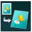

You can copy images so that they fill the entire page without borders.
 Note
Note-
When you use this function, load the original on the Platen Glass.
-
Display the copy menu screen.
-
Load paper.
-
Select  Borderless copy, then press the OK button.
-
Specify the number of copies by using the + or - button.
Change the print settings as necessary.
-
Press the Color button for color copying, or the Black button for black & white copying.
The machine starts copying.
Note-
Slight cropping may occur at the edges since the copied image is enlarged to fill the whole page. You can change the width to be cropped from the borders of the original image as needed. However, the cropped area will be larger if the extension amount is large. For details, see Extended copy amount.
-
For details on the paper size and the media type available for borderless copying, see Printing Area.